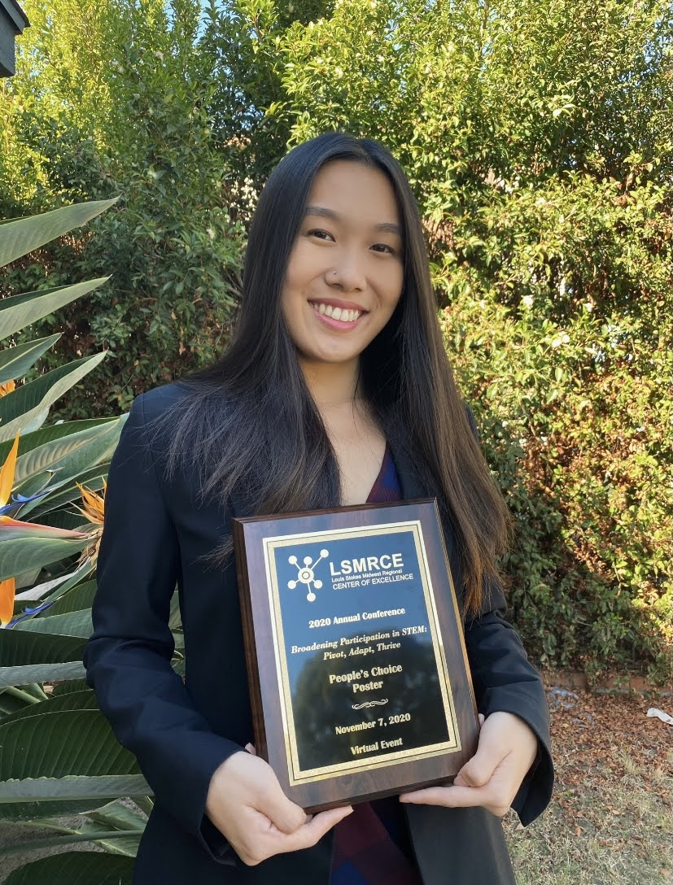
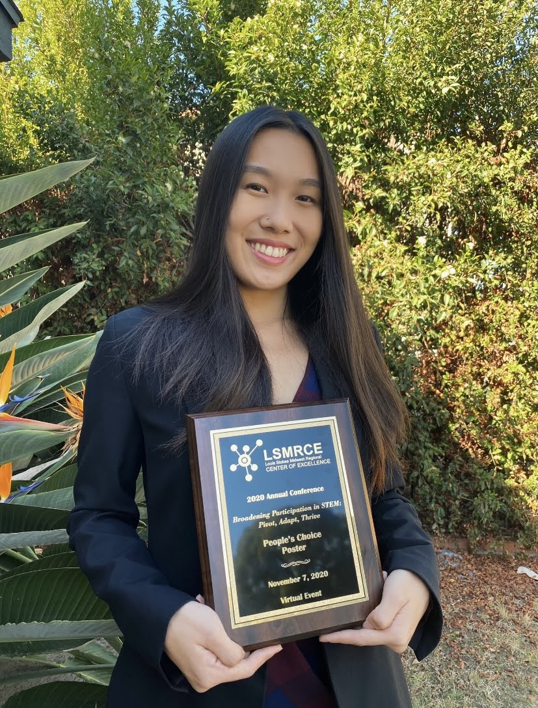
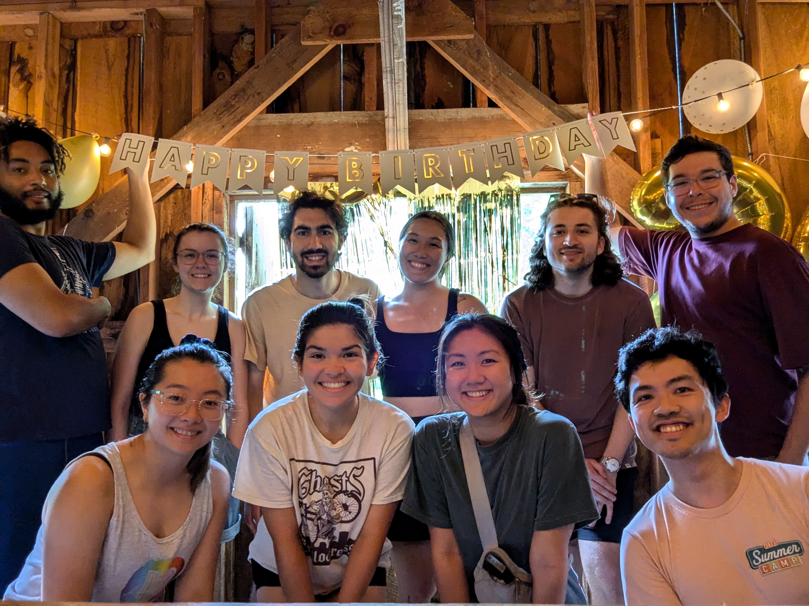
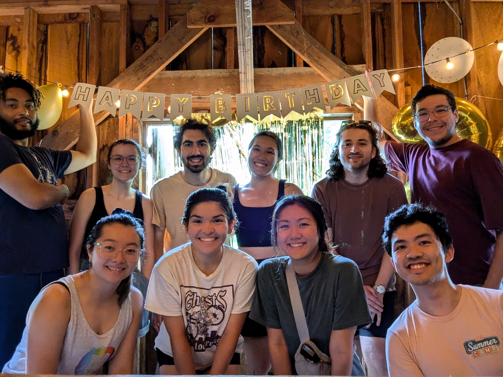
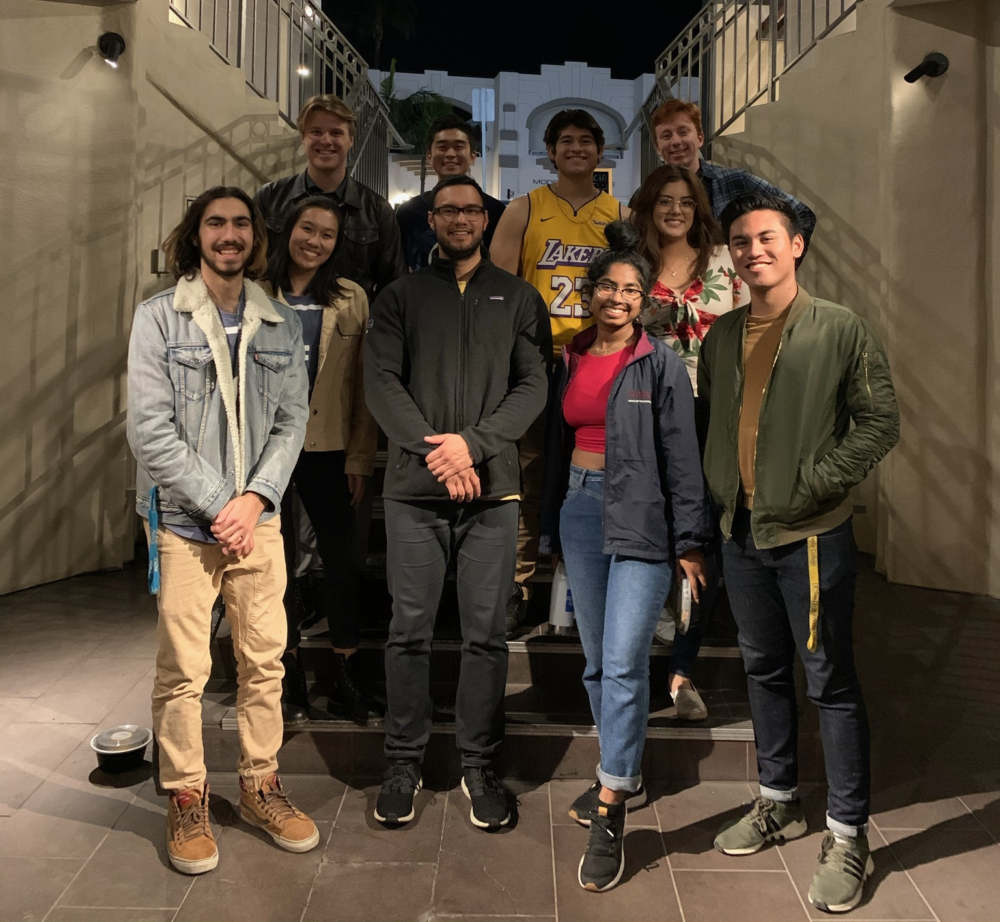
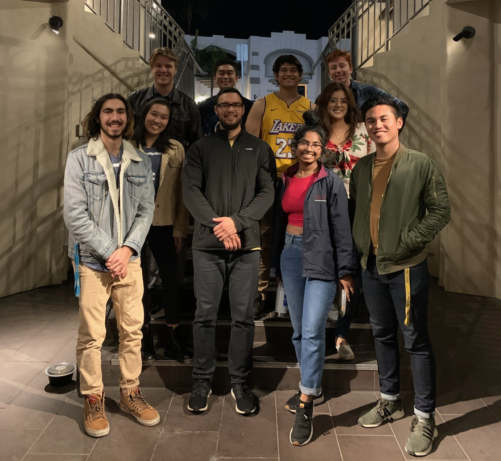
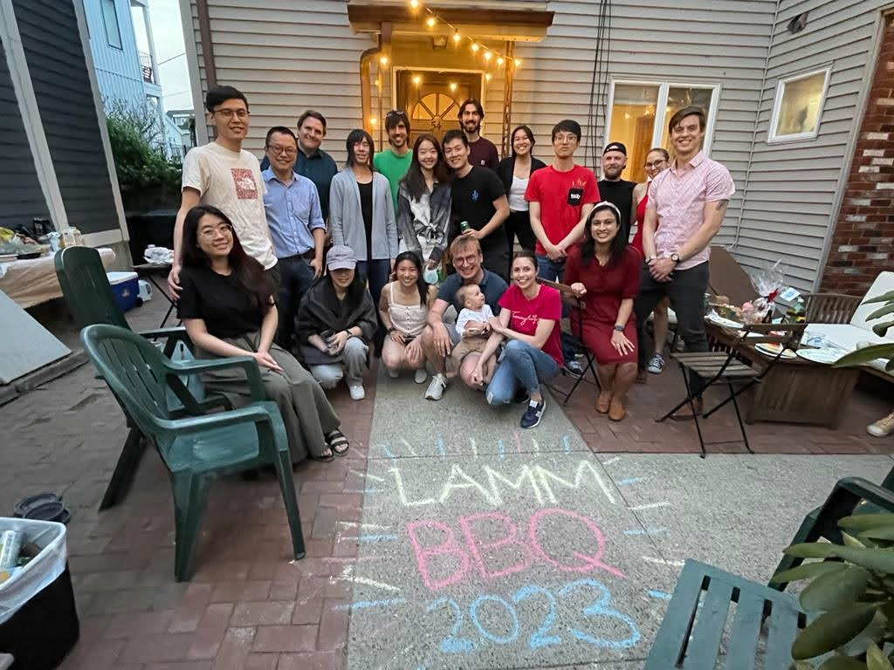
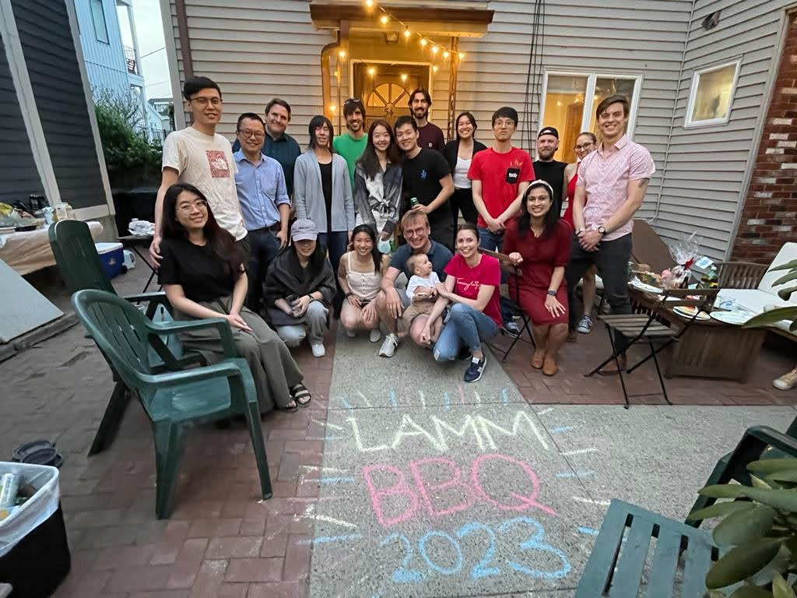

More About Me

I was born and raised in the heart of San Diego, California to Chinese-Vietnamese immigrant parents. Growing up between cultures in a family where opportunities were limited taught me to see the world through many lenses and recognize the transformative power of education. As a first-generation scholar, I have always been motivated by the opportunities that education and research can open, both for myself and for others. My path has taken me from sunny Southern California to the charming East Coast, a cross-country road trip that marked the start of my PhD at MIT.
Massachusetts Institute of Technology
Ph.D. Candidate, Materials Science & Engineering
Minor in Mechanical Engineering
2022 – 2026 (expected)
University of California, San Diego
B.S. Mechanical Engineering
Specialization in Mechanics of Materials
2018 – 2022
Through my studies in science and engineering, I’ve become fascinated by the natural world—especially biological materials which have been refined over eons of evolution. Learning from Nature feels like unlocking a blueprint refined by time itself. I’m excited by the potential of generative AI and large-scale models to accelerate discovery and explore intelligence, enabling us to explore materials and engineering design at unprecedented speeds, compressing evolutionary timescales into moments of computation. My work at the intersection of biomaterials and AI has deepened my understanding of how these tools can transform scientific and engineering pursuits. Looking ahead, I’m drawn to opportunities in AI for science and engineering with broad interests spanning sustainable materials, design, manufacturing, and biotechnology.
I am deeply grateful for the fellowships, scholarships, and grants that have supported my journey. Each one not only enabled me to pursue my education, but also shaped who I am today. Writing them here is a way of honoring the opportunities and communities that made this path possible.
I am also thankful for the honors that have recognized my academic achievements and research contributions. Each one is a reminder of the mentors, peers, and communities that have supported me along the way.


 

A few places where my work (and younger self) have shown up. Disclaimer: I am not liable for anything I said when I was 19.
When I’m not working, I’m usually out exploring, cooking, or hosting something.
A few snapshots with incredible people and communities I’ve been lucky to be part of!


 

 

 

Let’s chat! Feel free to reach out at rluu(at)mit.edu.
💻 GitHub · 🤗 Hugging Face · 💼 LinkedIn · 📚 Google Scholar